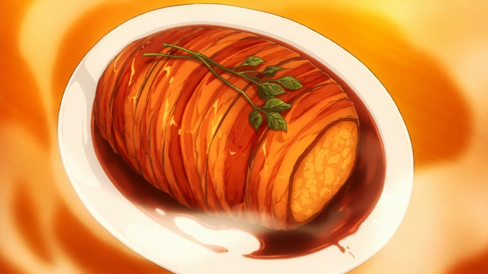
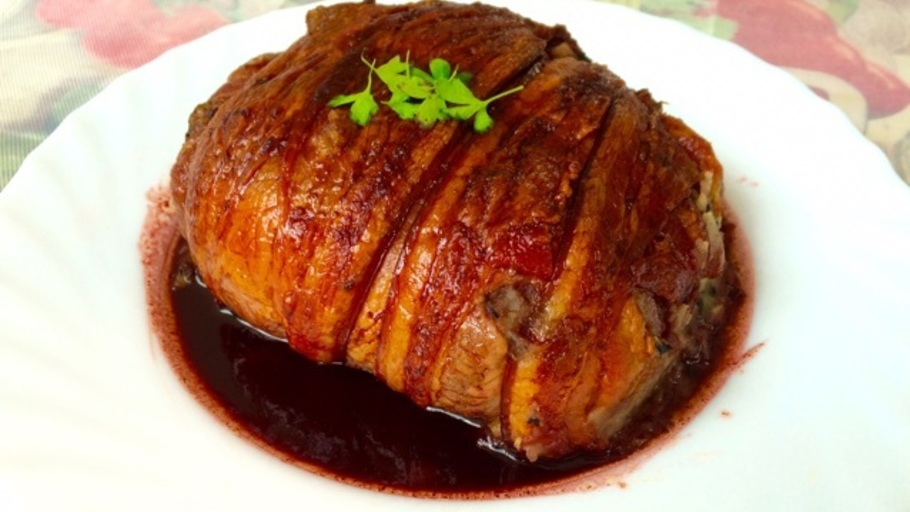

Gotcha! Pork Roast


Description
Never trust the exterior! This dish looks like a big chunk of roast pork on
the outside, but its mostly POTATOES
Ingredients
- 6 White potatoes
- 3 Eringi mushrooms
- 2 Packs of thick-cut bacon
- 1 Large white onion
- 1 Sprig of rosemary
- 1 Sprig of parsley
- 2 Tbsp / 30ml of soy sauce
- 2 Tbsp / 30ml of butter
- 1 Cup / 250ml of red wine
- 1/4 Cup / 60ml of sake (Sweet)
Steps
- Peel the Potatoes
-
Slice the Potatoes
- Wash the potatoes then cut them into quarters or halves, depending
on size.
-
Chop the Mushrooms and Onions into Equally-sized Brunoise (small 5-6cm
cubes)
-
Steam the Potatoes
- Steam potatoes until soft (about 15-20 minutes).
- DO NOT
steam or microwave the mushrooms.
-
Pan Fry the Onions and Mushrooms
- Prep the pan with a tablespoon of butter.
- Pan fry onions and
mushrooms until caramelized or fully golden.
-
Mash the Potatoes
- Mash into small chunks in a large bowl. Do not mash too much, you
want to avoid it being frothy to form it to shape.
-
Combine the Onion and Mushroom Mix with the Potato Mash
- Mix until the ingredients are even in the bowl.
-
Pick the Rosemary
- Pick the rosemary off its stem.
- Set aside.
-
Add the Salt
- Add a few sprinkles of salt to the top of the bowl.
-
Form the Fake Roast
- Let the mix cool until touchable (more than 5
minutes).
- Take all of the mix and form it into a log shape.
-
Wrap the Roast in Bacon
- Amount: 2 packs of thick-cut bacon.
- Wrap the roast fully, try not to leave any gaps, otherwise, the potatoes
will seep out when the bacon tightens.
- There is no surefire way of doing this, just coat it to the best of your
ability.
-
Step 12: Tie the Roast
- Tie the roast with the twine. It does not
need to be anything fancy, just wrap it around a few times.
- Intertwine the rosemary afterward.
-
Bake in the Oven
-Bake at 375ºF or 190ºC for 30-45 minutes or until bacon is golden (cook
longer for crispy bacon), turning halfway.
-
Boil the Wine In the Frying Pan
-Amount: 1 Cup, or 250ml.
-Bring the wine to a boil (~10 minutes) on medium-high heat in a frying pan.
The aim is to reduce it.
-
Add the Butter, Sake, and Soy Sauce to the Wine
-Amount: 1 tbs of butter, 1/4 cup of sake, 2 tbs of soy sauce.
-Melt the butter into the boiling wine.
-Pour the soy sauce and sake into the sauce.
-Continue to cook for 2-3 minutes.
-
Remove the Twine and the Rosemary
-When the baking is done, remove the twine and rosemary, they are not to be
eaten.
-
Pour the Sauce on the Roast
-Pour the finished sauce onto the roast (make sure the roast is on a plate
to hold the extra sauce). Pour slowly.
-
Add the Garnish
-Add a garnish to the top of the dish, we used parsley, the anime used
watercress.
- SERVE
Return to homepage